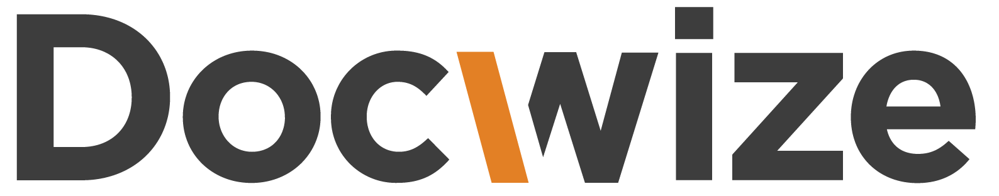
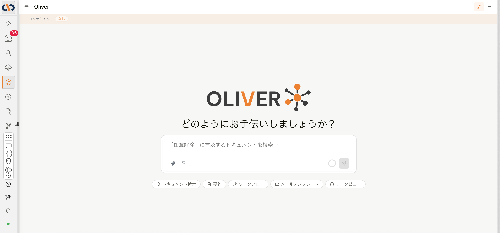

共同代表・代表取締役
松原 弘治
モバイルサービス企画・法人ソリューションに従事し、大手自動車メーカーのグローバルコネクテッドプロジェクト立ち上げを経験。企業向けサービスとプラットフォーム事業の知見を活かし、2022年に現組織を創業しました。
BUSINESS × TECHNOLOGY × REAL WORK
Japan / South Africa
二つの視点。ひとつのチーム。


私たちは、業務と技術、現場をつなぎ、複雑な課題をひもとき、使い続けられる仕組みをつくります。

DOCWIZE — 業務自動化プラットフォーム
PDF、Excel、メール、写真、業務データ。入口が何であっても、DocwizeはAI、人、ワークフロー、外部システムをひとつにつなぎ、確認・承認・次の処理・記録まで、業務を前へ進めます。


01 — Working Together
事業の意味と技術の現実を切り離さず、最初の対話から実行まで一緒に考えます。
共同代表・代表取締役
モバイルサービス企画・法人ソリューションに従事し、大手自動車メーカーのグローバルコネクテッドプロジェクト立ち上げを経験。企業向けサービスとプラットフォーム事業の知見を活かし、2022年に現組織を創業しました。
共同代表・最高技術責任者（CTO）
九州大学大学院にてAI分野を学び、修士課程を修了。AI・自然言語処理・LLMを活用したプロダクト開発に強みを持ち、AI技術を事業価値へつなぐ製品・技術戦略の策定から開発までをリードします。
02 — One Team
役割は違っても、判断の基準は同じです。事業、技術、製品、運用を分断せず、ひとつのチームとして課題に向き合います。

Business Systems & Operations
複雑な情報と業務要件を、責任の所在が明確で長く使える仕組みに整える。

Architecture, Security & Data
堅牢なアーキテクチャ、データフロー、外部連携、セキュリティ境界を設計する。

Product & Experience
構想を製品の方向性、使う人の体験、実際に動く解決策へ落とし込む。
03 — What We Build
Docwizeは、文書管理、AI、ワークフロー、承認、APIを別々の機能として提供するのではありません。さまざまな情報を受け取り、必要な内容を理解し、人の判断を組み込み、次の処理を動かし、根拠と結果を残す。ひとつの業務自動化プラットフォームとして、仕事を最後まで進めます。
AI、人、データ、外部システムをつなぐ、ひとつの業務基盤

PDF・Excel・メール・写真・業務データ
AI・OCR・検索・抽出・照合
人による確認・承認・例外対応
ワークフロー・通知・API・外部システム
版・判断・結果・証跡
OLIVERは、Docwizeの情報と業務を自然な言葉で扱うAIインターフェースです。必要な情報を探し、根拠を示し、人の確認を経て次の処理へつなぎます。
DOCUMENT MANAGEMENT
誰が、いつ、何を更新したかを記録、必要な文書をすぐに探し、判断と次の処理へつなぎます。保管して終わるのではなく、仕事を進めるための基盤にします。
04 — Experience
サービス構想、法人向け提案、モビリティ、国境を越えるパートナーシップ。
AI・自然言語処理、文書と業務データ、検索、判断支援、運用設計。
製品戦略、技術検証、アーキテクチャ、セキュリティ、現場への定着。
05 — Selected Work
現場の複雑さを隠さず、情報をつなぎ、責任と判断の流れを明確にする。以下は、私たちのチームが実際の業務で積み重ねてきた仕事の一部です。
06 — Principles
流行や肩書きではなく、目的、事実、そして使う人に向き合うことから始めます。
表面の要件だけでなく、なぜその仕組みが必要か、どこで壊れるかまで掘り下げます。
流行や慣習より、目的と事実を優先します。必要なものを、必要なだけつくります。
速さ、明快さ、信頼性、長く使えることを品質と考えます。
07 — Start a Conversation
まだ整理されていない構想でも構いません。
何が本当に必要か、一緒に考えるところから始めます。